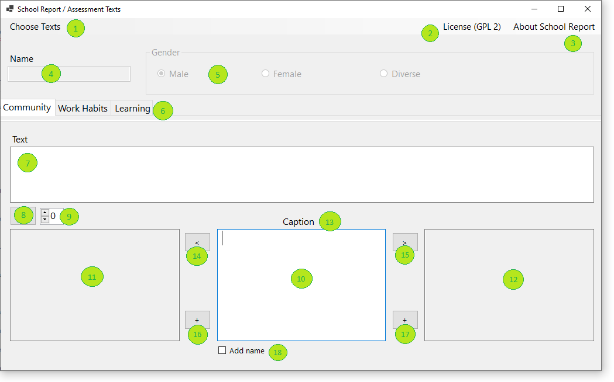

Schulzeugnisse / Assessment - App

Übersicht Menüleiste
Die Menüleiste der obersten Ebene dient als primärer Navigationshub für die Anwendung und bietet Benutzern Zugriff auf wesentliche Funktionen und Informationsressourcen. Es besteht aus drei Schlüsselelementen:
(1) Texte Auswählen
Mit diesem Menüpunkt können Benutzer eine Datei mit Bewertungstexten auswählen. Beim Klicken wird ein Dateidialog geöffnet, in dem der Benutzer eine Textdatei aus seinem lokalen System durchsuchen und auswählen kann. Nach der Auswahl wird der Inhalt der Datei in die Anwendung geladen und in den entsprechenden Abschnitten angezeigt. Wenn der Benutzer einen der Texte bearbeitet, entweder durch Ändern vorhandener Einträge oder Hinzufügen neuer Einträge, aktualisiert die Anwendung automatisch die Originaldatei, um diese Änderungen widerzuspiegeln. Dadurch wird sichergestellt, dass die Bewertungsdaten sitzungsübergreifend synchronisiert und persistent bleiben.
(2) Lizenz
Wenn Sie diese Option auswählen, wird der Standard-Webbrowser gestartet und zur Lizenzseite der Anwendung. Auf dieser Seite werden die Nutzungsbedingungen, Copyright-Informationen und etwaige Open-Source-Zuschreibungen beschrieben. Es bietet Transparenz und rechtliche Klarheit für die Nutzer darüber, wie die Anwendung und ihre Inhalte genutzt oder verbreitet werden können.
(3) Über die App
Der Menüpunkt "Über" öffnet einen modalen Dialog oder ein Popup-Fenster, in dem detaillierte Informationen über die Anwendung angezeigt werden. Dazu gehören die Versionsnummer, der Entwickler- oder Organisationsname, die Kontaktinformationen und eine kurze Beschreibung des Zwecks der App. Es kann auch Bestätigungen und Links zu verwandten Ressourcen oder Dokumentationen enthalten.
Abschnitt Benutzereingabe
Dieser Abschnitt ermöglicht es Benutzern, die Bewertungstexte zu personalisieren, indem sie spezifische Details über die zu bewertende Person eingeben.
(4) Name Textbox
Ein einzeiliges Eingabefeld mit der Bezeichnung „Name“ ermöglicht es Benutzern, den Namen der zu bewertenden Person einzugeben. Dieser Name wird dynamisch in die Bewertungstexte eingefügt, wo immer dies angemessen ist, und ermöglicht personalisierte und kontextbezogene Auswertungen. Das Textfeld unterstützt die Standardtexteingabe und kann eine Validierung enthalten, um leere Einreichungen zu verhindern.
(5) Geschlechtsradioboxen
Drei Radio-Buttons mit der Bezeichnung „Männlich“, „Weiblich“ und „Diverse“ ermöglichen es den Nutzern, das Geschlecht der bewerteten Person anzugeben. Diese Auswahl beeinflusst die grammatikalische Struktur und den Pronomenverbrauch innerhalb der Bewertungstexte. Es kann jeweils nur eine Option ausgewählt werden, die Klarheit und Konsistenz in der generierten Ausgabe gewährleistet.
(6) Bewertungskategorien
Der zentrale Bereich der GUI verfügt über eine Registerkartenoberfläche, wobei jede Registerkarte eine bestimmte Bewertungskategorie darstellt. Diese Registerkarten werden dynamisch aus der ausgewählten Datei geladen und können Abschnitte wie:
Community: Bewertet Sozialverhalten, Kooperation und zwischenmenschliche Beziehungen.
Arbeitsgewohnheiten: Beurteilt Fleiß, Pünktlichkeit und Aufgabenabschluss.
Lernen: Konzentriert sich auf akademische Leistung, Neugier und intellektuelles Engagement.
Jede Registerkarte enthält eine Liste der Bewertungspunkte, die für ihre Kategorie relevant sind. Benutzer können zwischen den Registerkarten navigieren, um Bewertungen über verschiedene Domänen hinweg anzuzeigen und auszuwählen.
(7) Vollständige Bewertung Textbox
Dieser große, scrollbare Textbereich zeigt das vollständige Bewertungsdokument an, das aus einzelnen Bewertungspunkten zusammengestellt wurde. Jedes Mal, wenn der Benutzer auf die Schaltfläche "Zur vollständigen Bewertung hinzufügen" (Element 8) klickt, wird der aktuelle Bewertungstext (Element 10) an dieses Feld angehängt. Der Text ist für die Lesbarkeit formatiert, wobei jeder Eintrag durch Zeilenumbrüche oder Aufzählungspunkte getrennt ist. Dieser Bereich unterstützt die manuelle Bearbeitung, sodass Benutzer die endgültige Ausgabe vor dem Exportieren oder Speichern verfeinern können.
Bewertung Interaktionskontrollen
(8) Zum vollständigen Bewertungsknopf hinzufügen
Diese Schaltfläche ermöglicht es Benutzern, den aktuell ausgewählten Bewertungspunkt an den kumulativen Bewertungstext anzuhängen. Nach dem Klicken wird der ausgewählte Text zu einem wachsenden Dokument hinzugefügt, das die vollständige Bewertung der Person darstellt. Dieses Dokument kann nach Bedarf überprüft, bearbeitet und exportiert werden.
(9) Navigationstasten Nach/Nach Unten
Diese Schaltflächen ermöglichen es Benutzern, durch die Liste der verfügbaren Bewertungspunkte auf der aktiven Registerkarte zu scrollen. Die Schaltfläche „Hoch“ verschiebt die Auswahl auf das vorherige Element, während die Schaltfläche „Nach unten“ zum nächsten übergeht. Dies erleichtert die schnelle Navigation und den Vergleich verschiedener Bewertungen.
Bewertungsbearbeitungspanel
Dieser Abschnitt der GUI widmet sich der Anzeige, Verwaltung und Bearbeitung von individuellen und kumulativen Bewertungstexten. Es bietet den Nutzern eine klare Sicht auf den aktuellen Bewertungspunkt, seinen Kontext und sein Verhältnis zu anderen Bewertungen.
(10) Aktueller Bewertungstext
Dieses Textfeld enthält die aktuell ausgewählte Bewertungsanweisung. Es ist der Text, der der vollständigen Bewertung hinzugefügt wird, wenn der Benutzer auf die Schaltfläche "Hinzufügen" klickt (Element 8). Benutzer können diesen Text direkt bearbeiten, um die Sprache zu personalisieren oder zu verfeinern, bevor sie hinzugefügt wird. Das Textfeld wird so gestaltet, dass es seine Bedeutung hervorhebt, oft mit einem Rand oder einer Hintergrundfarbe, um es von anderen Elementen zu unterscheiden.
Die Prüfbox (18) ermöglicht es dem Benutzer, eines der persönlichen Pronomen durch den Namen des Benutzers für mehr perkonale Bewertungstexte zu ersetzen.
(11) Nächster besserer Bewertungstext
Dieses Textfeld befindet sich links neben dem aktuellen Bewertungstext (Element 10) und zeigt eine günstigere Version der aktuellen Bewertung an. Es bietet den Nutzern eine positive Alternative, die die Stärken des Individuums besser widerspiegeln kann. Wenn für den aktuellen Punkt keine bessere Bewertung vorliegt, bleibt dieses Textfeld leer oder zeigt eine Platzhalternachricht wie "Keine bessere Bewertung verfügbar" an.
(12) Nächster schlechterer Bewertungstext
Rechts neben dem aktuellen Bewertungstext gelegen, zeigt dieses Textfeld eine kritischere oder weniger günstige Version der aktuellen Bewertung. Es ermöglicht den Benutzern, den Ton bei Bedarf nach unten anzupassen. Wie das bessere Bewertungsfeld kann dieses Textfeld leer sein, wenn keine schlechtere Alternative verfügbar ist.
(13) Beurteilungspunktüberschrift
Dieses Etikett oder Textfeld, das prominent über dem aktuellen Bewertungstext positioniert ist, zeigt den Namen oder die Überschrift des aktuell ausgewählten Bewertungspunkts an. Wenn der Benutzer beispielsweise auf der Registerkarte "Arbeitsgewohnheiten" arbeitet, kann die Überschrift "Task-Abschluss" lauten. Dies hilft den Benutzern, orientiert zu bleiben und den Kontext der Bewertung zu verstehen, die sie bearbeiten oder auswählen.
Bewertungsqualitätsknöpfe
Zwei Richtknöpfe flankieren den aktuellen Beurteilungspunkt:
(14) Linke Taste (Bessere Bewertungen): Zeigt günstigere oder positive Bewertungen im Zusammenhang mit dem aktuellen Punkt an.
(15) Rechte Taste (Schlimmere Bewertungen): Zeigt weniger günstige oder kritische Bewertungen an.
Diese Schaltflächen helfen Benutzern, den Ton und den Inhalt der Bewertung zu verfeinern, indem sie alternative Formulierungen anbieten, die sich in Gefühl und Intensität unterscheiden.
Neue Bewertungs-Buttons erstellen
Diese Schaltflächen ermöglichen es Benutzern, neue Bewertungstexte basierend auf dem aktuellen Kontext zu generieren:
(16) Linke Schaltfläche (Bessere Bewertungserstellung): Erstellt eine neue, positivere Bewertung und fügt sie unmittelbar vor dem aktuellen Text ein.
(17) Rechte Schaltfläche (Schlimmerbewertungserstellung): Erstellt eine neue, kritischere Bewertung und fügt sie unmittelbar nach dem aktuellen Text ein.
Diese Funktion ermöglicht es Benutzern, die Bewertungsbibliothek mit benutzerdefinierten Einträgen zu erweitern, die nuancierte und personalisierte Beobachtungen widerspiegeln.
(18) Name hinzufügen
Mit diesem Kontrollkästchen kann der Benutzer eines der persönlichen Pronomen durch den Namen des Benutzers für weitere persönliche Bewertungstexte ersetzen.
Zusammenfassung des GUI-Workflows
So kann sich eine typische Benutzerinteraktion entwickeln:
- Bewertungsdatei über „Texte auswählen“ (Element 1) laden.
- Geben Sie den Namen ein und wählen Sie Geschlecht mit den Elementen 4 und 5.
- Navigieren Sie durch Tabs (Element 6), um eine Kategorie wie „Community“ auszuwählen.
- Verwenden Sie Up/Down-Tasten (Element 9), um einen Bewertungspunkt auszuwählen.
- Review Überschrift und aktueller Text (Elemente 10 und 13).
- Vergleichen Sie bessere/schlechtere Alternativen (Elemente 11 und 12).
- Klicken Sie auf den aktuellen Text (Element 10), um den Text zu bearbeiten.
- Klicken Sie auf Schaltfläche Hinzufügen (Element 8), um den aktuellen Text an die vollständige Bewertung anzuhängen (Element 7).
- Wiederholen Sie dies bei Bedarf und kopieren Sie dann den vollständigen Bewertungstext.
Struktur des XML-Dokuments
<?xml version="1.0" encoding="utf-8" ?>
<school-report-texts>
<section strName="Soziales">
<point strCaption="Miteinander leben und lernen">
<assessment strText="Seine/ihre MitschülerInnen arbeiteten und spielten sehr gerne mit ihm/ihr zusammen.
Er/sie zeigte sich ihnen gegenüber sehr freundlich und stets respektvoll." />
...
</point>
<point strCaption="Rücksichtnahme, Toleranz und HilfsbereitschaftRücksichtnahme, Toleranz und Hilfsbereitschaft">
...
</point>
</section>
<section strName="Arbeitsgewohnheiten">
<point strCaption="Verantwortung und Pflichten">
<assessment strText="Er/sie hat den Unterricht sehr aufmerksam und stets interessiert verfolgt.
An Unterrichtsgesprächen hat er/sie sich aktiv und mit weiterführenden Beiträgen beteiligt." />
...
</point>
</section>
</school-report-texts>
Wurzelelement
<Schule-Bericht-Texte> Der Container für alle Berichtsabschnitte.
Sektionen
Jeder <Abschnitt> stellt einen thematischen Bereich des Schulberichts dar. Das Abschnittselement hat ein Attribut:
strName="...": Der in Anführungszeichen gesetzte Teil enthält Namen des Abschnitts, der als Registerkarten in der GUI angezeigt wird.
Punkte
Jeder <Punkt> Innerhalb eines Abschnitts beschreibt ein bestimmter Aspekt des sozialen Verhaltens. Jeder Punkt hat Attribut:
strCaption="...": Der Titel der Kategorie wird bewertet.
Bewertungen
Jeder <Bewertung> bietet einen vorgefertigten Bewertungstext für das Verhalten eines Schülers in dieser Kategorie. Bewertungen können folgende Attribute haben:
- nId: Eine numerische Kennung für die Bewertung (optional)
- strText Der tatsächliche Bewertungstext, der die Bewertung des Schülers in der angegebenen Kategorie beschreibt. Dieses Attribut ist zwingend erforderlich.